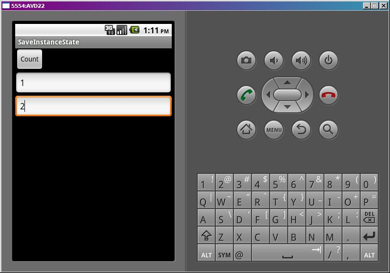
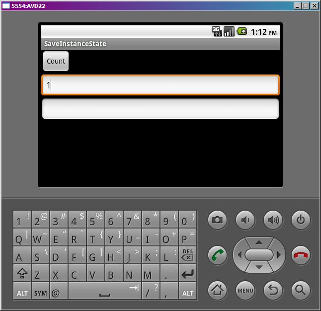
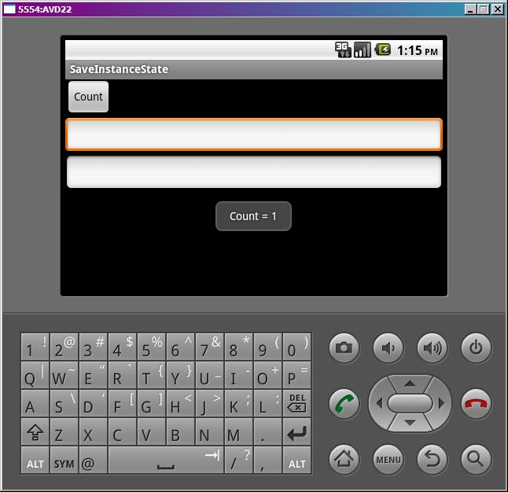
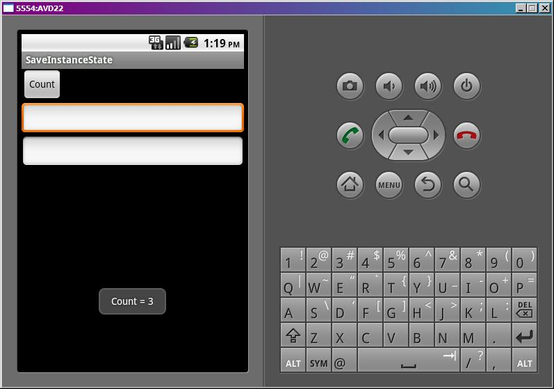

В этом уроке:
- сохраняем данные при повороте экрана
Теорию по этому вопросу можно почитать тут. Я здесь вкратце дам вольный перевод.
Когда работа Activity приостанавливается(onPause или onStop), она остается в памяти и хранит все свои объекты и их значения. И при возврате в Activity, все остается, как было. Но если приостановленное Activity уничтожается, например, при нехватке памяти, то соответственно удаляются и все его объекты. И если к нему снова вернуться, то системе надо заново его создавать и восстанавливать данные, которые были утеряны при уничтожении. Для этих целей Activity предоставляет нам для реализации пару методов: первый позволяет сохранить данные – onSaveInstanceState, а второй – восстановить - onRestoreInstanceState.
Эти методы используются в случаях, когда Activity уничтожается, но есть вероятность, что оно еще будет востребовано в своем текущем состоянии. Т.е. при нехватке памяти или при повороте экрана. Если же вы просто нажали кнопку Back (назад) и тем самым явно сами закрыли Activity, то эти методы не будут выполнены.
Но даже если не реализовать эти методы, у них есть реализация по умолчанию, которая сохранит и восстановит данные в экранных компонентах. Это выполняется для всех экранных компонентов, у которых есть ID.
Создадим простое приложение, чтобы протестить все эти тезисы. Посмотрим, в какой момент вызываются эти методы, попробуем в них что-нить сохранить. Также убедимся, что необходимо вызывать соответствующие методы супер-класса, чтобы сохранялись данные экранных компонентов.
Создадим проект:
Project name: P0701_SaveInstanceState
Build Target: Android 4.0
Application name: SaveInstanceState
Package name: ru.startandroid.develop.p0701saveinstancestate
Create Activity: MainActivity
В strings.xml пропишем тексты:
<?xml version="1.0" encoding="utf-8"?>
<resources>
<string name="app_name">SaveInstanceState</string>
<string name="count">Count</string>
</resources>
В main.xml нарисуем кнопку и пару полей для ввода текста:
<?xml version="1.0" encoding="utf-8"?>
<LinearLayout
xmlns:android="http://schemas.android.com/apk/res/android"
android:layout_width="fill_parent"
android:layout_height="fill_parent"
android:orientation="vertical">
<Button
android:id="@+id/button1"
android:layout_width="wrap_content"
android:layout_height="wrap_content"
android:onClick="onclick"
android:text="@string/count">
</Button>
<EditText
android:id="@+id/editText1"
android:layout_width="match_parent"
android:layout_height="wrap_content"
android:ems="10">
<requestFocus>
</requestFocus>
</EditText>
<EditText
android:layout_width="match_parent"
android:layout_height="wrap_content"
android:ems="10">
</EditText>
</LinearLayout>Обратите внимание, что второй EditText без ID.
В MainActivity будем вызывать все методы Lifecycle и два вышеописанных:
package ru.startandroid.develop.p0701saveinstancestate;
import android.app.Activity;
import android.os.Bundle;
import android.util.Log;
import android.view.View;
public class MainActivity extends Activity {
final String LOG_TAG = "myLogs";
int cnt = 0;
/** Called when the activity is first created. */
public void onCreate(Bundle savedInstanceState) {
super.onCreate(savedInstanceState);
setContentView(R.layout.main);
Log.d(LOG_TAG, "onCreate");
}
protected void onDestroy() {
super.onDestroy();
Log.d(LOG_TAG, "onDestroy");
}
protected void onPause() {
super.onPause();
Log.d(LOG_TAG, "onPause");
}
protected void onRestart() {
super.onRestart();
Log.d(LOG_TAG, "onRestart");
}
protected void onRestoreInstanceState(Bundle savedInstanceState) {
super.onRestoreInstanceState(savedInstanceState);
Log.d(LOG_TAG, "onRestoreInstanceState");
}
protected void onResume() {
super.onResume();
Log.d(LOG_TAG, "onResume ");
}
protected void onSaveInstanceState(Bundle outState) {
super.onSaveInstanceState(outState);
Log.d(LOG_TAG, "onSaveInstanceState");
}
protected void onStart() {
super.onStart();
Log.d(LOG_TAG, "onStart");
}
protected void onStop() {
super.onStop();
Log.d(LOG_TAG, "onStop");
}
public void onclick(View v) {
}
}В каждом из них пишем лог, чтобы отследить последовательность вызовов. Метод onclick пока не реализуем.
Все сохраним и запустим. Введем в текстовые поля какие-нить данные:

и повернем экран CTRL+F12.
В итоге видим:

Данные в первом поле сохранились при повороте, а во втором пропали. Это произошло потому, что дефолтовые методы сохранения/восстановления умеют работать только с компонентами, которые имеют ID. Посмотрим лог.
onCreate
onStart
onResume
Эти три метода выполнились при запуске.
Затем мы повернули экран:
onSaveInstanceState
onPause
onStop
onDestroy
onCreate
onStart
onRestoreInstanceState
onResume
Первым делом вызывается onSaveInstanceState, здесь нам надо будет реализовывать сохранение своих данных. Далее идет уничтожение Activity (onPause, onStop, onDestroy) и создание нового onCreate, onStart. И перед onResume вызывается метод восстановления данных – onRestoreInstanceState.
Последовательность мы рассмотрели - сохраняются данные перед onPause, а восстанавливаются перед onResume. Попробуем теперь что-нибудь сохранить и восстановить. У нас на экране есть кнопка, будем по ее нажатию увеличивать счетчик нажатий на единицу и выводить всплывающее сообщение с итоговым кол-вом нажатий. Переменная cnt у нас уже есть. Реализуем onclick:
public void onclick(View v) {
Toast.makeText(this, "Count = " + ++cnt, Toast.LENGTH_SHORT).show();
}
Повернем эмулятор обратно в вертикальную ориентацию. Запустим приложение, и жмем на кнопку Count. Видим сообщение с кол-вом нажатий. Нажмем еще несколько раз, получим, например 5.
Теперь повернем экран и снова нажмем кнопку.
Мы видим, что счетчик сбросился.

Это произошло потому, что текущий объект Activity был уничтожен и потерял значения всех переменных, в том числе и cnt. При создании нового Activity значение cnt равно 0 и отсчет пошел заново. Давайте это пофиксим. Реализуем метод сохранения onSaveInstanceState:
protected void onSaveInstanceState(Bundle outState) {
super.onSaveInstanceState(outState);
outState.putInt("count", cnt);
Log.d(LOG_TAG, "onSaveInstanceState");
}В объект outState мы пишем значение переменной cnt. Механизм аналогичен помещению данных в Intent.
Метод восстановления onRestoreInstanceState:
protected void onRestoreInstanceState(Bundle savedInstanceState) {
super.onRestoreInstanceState(savedInstanceState);
cnt = savedInstanceState.getInt("count");
Log.d(LOG_TAG, "onRestoreInstanceState");
}Из savedInstanceState вытаскиваем значение и помещаем в переменную cnt. Теперь при уничтожении и воссоздании Activity переменная cnt сохранит свое значение, и наш счетчик продолжит работать.
Проверим. Вернем AVD в вертикальную ориентацию. Все сохраним, запустим приложение. Понажимаем на кнопку, немного накрутим счетчик

и поворачиваем экран.
Жмем снова кнопку
счетчик не сбросился, а продолжил увеличиваться с последней позиции.
Итак, методы onSaveInstanceState и onRestoreInstanceState по дефолту сохраняют данные в экранных компонентах. Если мы реализуем их самостоятельно, то вызываем методы супер-класса и пишем свой код для своих переменных. Ради интереса, можете попробовать убрать вызовы методов суперкласса из onSaveInstanceState и onRestoreInstanceState. Данные в текстовом поле перестанут сохраняться при повороте экрана.
Кроме метода onRestoreInstanceState, доступ к сохраненным данным также можно получить в методе onCreate. На вход ему подается тот же самый Bundle. Если восстанавливать ничего не нужно, он будет = null.
Есть еще один полезный механизм сохранения данных. Android дает нам возможность сохранить ссылку на какой-либо объект и вернуть ее в новый созданный Activity. Для этого существуют методы:
onRetainNonConfigurationInstance – в нем мы сохраняем ссылку, передавая ее на выход (return) метода
getLastNonConfigurationInstance – этот метод ссылку нам возвращает
Т.е., например, у нас есть какой то объект myObj (класс MyObject) и нам надо сохранить ссылку на него при повороте экрана.
Мы реализуем в Activity метод onRetainNonConfigurationInstance:
public Object onRetainNonConfigurationInstance() {
return myObj;
}Этот метод будет вызван перед уничтожением Activity. От нас требуется дать на выход этому методу наш объект, который надо сохранить.
А, при создании нового Activity, в onCreate (например) мы используем метод getLastNonConfigurationInstance:
myObj = (MyObject) getLastNonConfigurationInstance();Мы получили обратно объект класса Object и привели его к нашему классу MyObject.